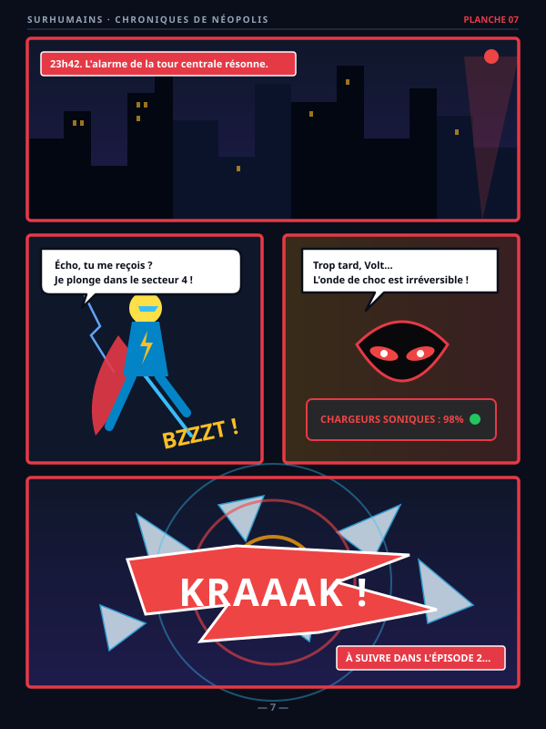
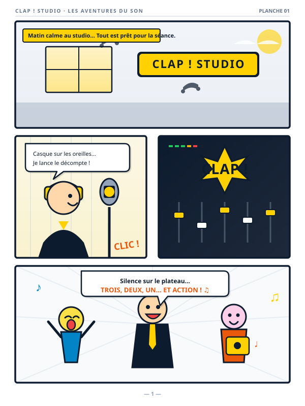
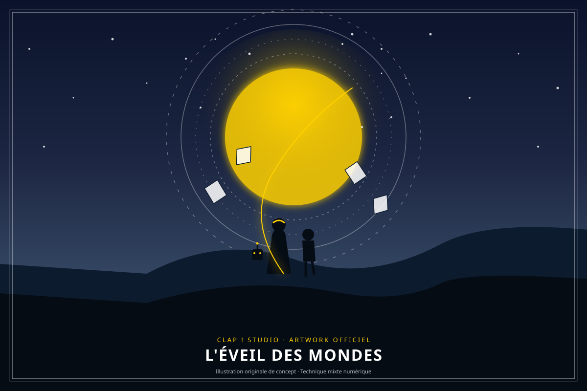
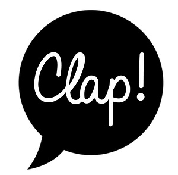

Planche 07
Épisode 1 · Action
Alerte Nocturne sur Néopolis
Poursuite sur les toits et confrontation
Le système est clair par défaut : le fond principal est le blanc cassé #F9F9F9, et c'est lui qui domine. Le bleu électrique est une couleur de contenu — --primary, pour les titres, le texte et les boutons pleins — et, dans sa déclinaison profonde, le fond d'une seule bande de rupture par page. Le rose corail marque ce qui est cliquable ou en cours de lecture ; il ne sert jamais de fond à du texte long.
Deux familles de titres selon le registre : --font-heading pour les pages publiques destinées aux enfants, --font-display pour les pages pro / à accès protégé. Chez Clap ! Studio, Gaegu et Avenir Heavy ; ici, Avenir Heavy tient les deux rôles — le site de référence n'emploie aucune écriture manuscrite, le registre est documentaire et non conté. Lexend reste le corps de texte dans tous les thèmes — choisie pour sa lisibilité chez les lecteurs débutants, elle n'est jamais remplacée.
— · --fs-title-fun · .cl-title-fun
— · --fs-title-pro · .cl-title-pro
—, interligne --lh-loose (1.8). Corps de texte long sur fond clair, centré, largeur limitée à --prose-max pour garder une longueur de ligne confortable.
Aucune police n'est chargée en plus du système de base : le thème réutilise assets/fonts/avenir-heavy.woff2. Avenir Heavy n'ayant qu'une graisse, les titres n'ont pas besoin d'être dégraissés comme au Conjugarium.
Échelle en rem, multiples de 0.25rem. Les rayons suivent la taille de l'objet : plus la surface est grande, plus le rayon est doux. Tout ce qui est interactif et compact est en pill.
Un seul bouton plein par zone visible. Le rose corail est réservé à l'action principale ; tout le reste est en ghost. Le hover est toujours un léger scale + éclaircissement, jamais un changement de teinte.
Le badge accent qualifie le contenu (type d'œuvre). Le badge ghost qualifie une ressource secondaire. Le badge success confirme un état. Les pills de filtre basculent en rose plein quand actives.
Les cartes remontent d'un cran par rapport à la surface qui les porte — blanches sur le blanc cassé, bleu électrique sur la bande profonde. La bordure accent (--accent) est réservée à une seule carte par page : l'action qu'on veut voir en premier.
Format A3, prêtes pour l'affichage en classe.
Et si avoir un super-pouvoir ne réglait rien ? Une fiction documentaire pour se poser les bonnes questions.
Les champs sont en creux par rapport à la carte qui les contient (--surface-sunken). Le focus se signale par la bordure accent + un halo de 3px — jamais par l'outline du navigateur.
Saisissez le code fourni dans votre pack pour accéder aux ressources.
Le composant central du studio. Les lignes sont collées (pas d'espace, un filet de séparation) et le bloc entier est masqué en --r-lg. La ligne en lecture vire au rose sur trois signaux à la fois : numéro, titre, fond.
Seule zone d'accent pleine du produit, posée en position:fixed au-dessus du contenu. Sur mobile il perd sa forme pill (rayon --r-2xl) et ses contrôles secondaires. Prévoir .cl-player-spacer en fin de page pour que le dernier élément ne passe pas dessous.
Le pendant vidéo de la playlist audio. Trois briques : .cl-vgallery pour choisir une vidéo, .cl-video pour le lecteur 16:9, .cl-vswitcher pour changer d'épisode sans quitter la page. Comme la playlist audio, aucune couleur n'est écrite en dur : le thème seul décide.
La vignette est en aspect-ratio:16/9, donc jamais déformée. Au survol, quatre signaux partent ensemble : la carte se soulève, la vignette grandit d'un cheveu, le voile noir s'éclaircit et le bouton play s'inverse. Sous 600px la carte passe en colonne et le CTA se range à droite.
.cl-video__frame tient le ratio 16:9 ; l'iframe ou la video qu'on y glisse se colle aux quatre bords toute seule. Le fond est --surface-invert pour que le noir de la vidéo ne fasse pas de saut au chargement.
La grille se remplit toute seule (auto-fill, colonnes de 200px minimum) : une colonne sur mobile, quatre sur grand écran, sans media query. L'épisode en cours porte .cl-vchip--active : bordure accent et pastille pleine.
Présentation des planches de bande dessinée, crayonnés préparatoires et illustrations du projet Surhumains. Deux modes d'affichage : en vignettes (.cl-board-gallery) pour parcourir visuellement les scènes, ou en liste (.cl-board-list) pour un sommaire structuré. Chaque vignette et chaque ligne ouvrent instantanément la planche en grand format et en surimpression dans la visionneuse (.cl-lightbox).
Le ratio 3:4 portrait respecte le format d'une planche de BD standard. Au survol, la carte se soulève, un voile doux apparaît avec une icône loupe, et l'image s'anime d'un léger zoom. Clic pour agrandir.

Planche 07Poursuite sur les toits et confrontation

Planche 01Prémices de la transmission sonique

IllustrationPoster officiel de l'univers étendu
Navigation linéaire d'un épisode : titres des planches, minutage audio associé et aperçu en un clic.
Poursuite sur les toits de la ville et confrontation dans la centrale
Enregistrement des ondes primaires et premier test
Poster promotionnel et couverture du tome 1
La signature visuelle : jamais de bord droit entre deux sections de couleurs différentes. La forme vient du thème (--divider-shape) — coulures de peinture chez Clap ! Studio, nuages au Conjugarium, flammes ici — relevées telles quelles sur le séparateur de section de clapeditions.fr/surhumains. Elle est appliquée en mask-image, donc les couleurs se posent par instance, en CSS pur.
La densité du motif est réglable par thème, via --divider-repeat : c'est la largeur d'un motif, donc 50% en donne deux sur la largeur. Le SVG des flammes contient déjà trois motifs sur ses 1920 unités : il passe donc à 100% (200% sous 600px) pour retrouver la densité du site d'origine. Les trois formes partagent la même convention : un SVG de 1920 unités de large, calé sur son bord bas.
Le système couvre deux registres. La page publique alterne surface claire, surface sombre et accent, séparés par des .cl-wave, titres en --font-heading. La page protégée reste en surface sombre pleine du haut en bas, sans entête ni pied de page, titres en --font-display — c'est le registre « ressources pro ». Dans ce thème les deux registres partagent la même police : la distinction se fait par la mise en page seule.

Aventures audio & podcasts
pour les enfants
Clap ! Studio écrit et produit des fictions audio pour les enfants.
Le bleu profond n'est pas un fond de page, c'est une rupture : une bande sombre par page, pour le moment fort — le lecteur intégral, une mise en avant. Poser .cl-invert (ou .cl-section-invert) redéclare la rampe de texte, les bordures et les voiles pour tout le sous-arbre. Les composants à l'intérieur sont exactement les mêmes : aucune variante sombre à maintenir.
Même .cl-playlist, mêmes .cl-row, mêmes boutons que sur fond clair.
Une seule par page. Deux bandes sombres et la rupture ne rompt plus rien : le fond clair redevient l'exception, ce que ce système refuse.
Les tokens sont en deux couches. Les primitives (--clap-*, --cjg-*, --shm-*) portent les couleurs brutes et ne sont jamais lues par un composant. La couche sémantique (--surface, --accent, --text-1…) est la seule que lisent les composants — et donc la seule qu'un thème redéfinit. Basculer le sélecteur en haut de page rejoue toute la documentation dans l'autre thème : aucune classe ni aucun composant ne change.
| Token | Clap ! Studio | Surhumains |
|---|---|---|
--primary | #0D1B2E navy | #3333CB bleu électrique |
--surface | #FFFFFF blanc | #F9F9F9 blanc cassé |
--surface-raised | #F6F7F9 | #FFFFFF |
--surface-invert | #0D1B2E | #2626A8 bleu profond |
--accent | #FFD100 jaune | #F98FA5 rose corail |
--accent-ink | #7A6000 | #B0234A |
--on-accent | #1A1A1A | #14144B |
--font-heading | Gaegu | Avenir Heavy |
--divider-shape | coulures (×2) | flammes (×1) |
Surhumains dispose d'un second fond clair, la menthe #9EEFDF. Elle n'a pas d'équivalent chez Clap ! Studio : elle est donc exposée comme utilitaire, .shm-section-mint, plutôt que comme token.
Le rose corail est trop clair pour porter du texte sur fond clair : --accent-ink vaut #B0234A (6.3:1 sur le blanc cassé). C'est lui que lisent les composants pour un accent en texte, jamais --accent.